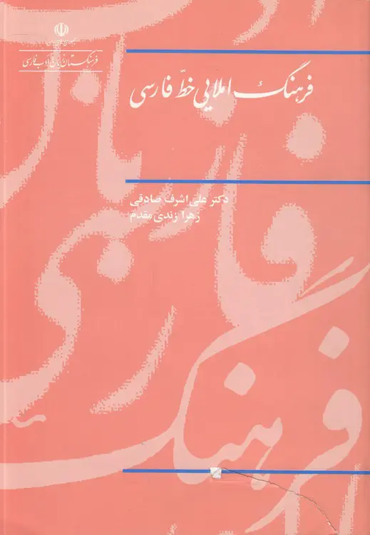

فرهنگ املایی خط فارسی
جستوجو در فهرست واژهها و صورتهای املایی ثبتشده در کتاب فرهنگ املایی خط فارسی.


در حال بارگذاری…
صورتهای واژگانی و جایگزینها همانگونه که در منبع آمدهاند نمایش داده میشوند. نمایش یک صورت در این فهرست بهتنهایی به معنای درستتر یا مرجّحبودن آن نیست.